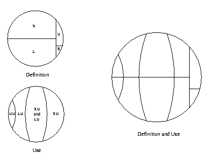
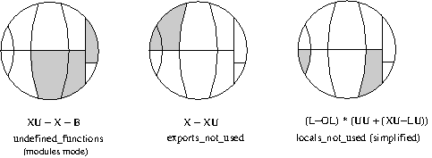

Xref - The Cross Reference Tool
Xref is a cross reference tool that can be used for finding dependencies between functions, modules, applications and releases. It does so by analyzing the defined functions and the function calls.
In order to make Xref easy to use, there are predefined analyses that perform some common tasks. Typically, a module or a release can be checked for calls to undefined functions. For the somewhat more advanced user there is a small, but rather flexible, language that can be used for selecting parts of the analyzed system and for doing some simple graph analyses on selected calls.
The following sections show some features of Xref, beginning with a module check and a predefined analysis. Then follow examples that can be skipped on the first reading; not all of the concepts used are explained, and it is assumed that the reference manual has been at least skimmed.
Module Check
Assume we want to check the following module:
-module(my_module).
-export([t/1]).
t(A) ->
my_module:t2(A).
t2(_) ->
true.
Cross reference data are read from BEAM files, so the first step when checking an edited module is to compile it:
1> c(my_module, debug_info).
./my_module.erl:10: Warning: function t2/1 is unused
{ok, my_module}
The debug_info option ensures that the BEAM file contains debug information, which makes it possible to find unused local functions.
The module can now be checked for calls to deprecated functions , calls to undefined functions , and for unused local functions:
2> xref:m(my_module)
[{deprecated,[]},
{undefined,[{{my_module,t,1},{my_module,t2,1}}]},
{unused,[{my_module,t2,1}]}]
m/1 is also suitable for checking that the BEAM file of a module that is about to be loaded into a running a system does not call any undefined functions. In either case, the code path of the code server (see the module code ) is used for finding modules that export externally called functions not exported by the checked module itself, so called library modules .
Predefined Analysis
In the last example the module to analyze was given as an argument to m/1 , and the code path was (implicitly) used as library path . In this example an xref server will be used, which makes it possible to analyze applications and releases, and also to select the library path explicitly.
Each Xref server is referred to by a unique name. The name is given when creating the server:
1> xref:start(s).
{ok, <0.27.0>}
Next the system to be analyzed is added to the Xref server. Here the system will be OTP, so no library path will be needed. Otherwise, when analyzing a system that uses OTP, the OTP modules are typically made library modules by setting the library path to the default OTP code path (or to code_path , see the reference manual ). By default, the names of read BEAM files and warnings are output when adding analyzed modules, but these messages can be avoided by setting default values of some options:
2>
xref:set_default(s, [{verbose,false}, {warnings,false}]).
ok
3> xref:add_release(s, code:lib_dir(), {name, otp}).
{ok,otp}
add_release/3 assumes that all subdirectories of the library directory returned by code:lib_dir() contain applications; the effect is that of reading all applications' BEAM files.
It is now easy to check the release for calls to undefined functions:
4> xref:analyze(s, undefined_function_calls).
{ok, [...]}
We can now continue with further analyses, or we can delete the Xref server:
5> xref:stop(s).
The check for calls to undefined functions is an example of a predefined analysis, probably the most useful one. Other examples are the analyses that find unused local functions, or functions that call some given functions. See the analyze/2,3 functions for a complete list of predefined analyses.
Each predefined analysis is a shorthand for a query , a sentence of a tiny language providing cross reference data as values of predefined variables . The check for calls to undefined functions can thus be stated as a query:
4> xref:q(s, "(XC - UC) || (XU - X - B)").
{ok,[...]}
The query asks for the restriction of external calls except the unresolved calls to calls to functions that are externally used but neither exported nor built-in functions (the || operator restricts the used functions while the | operator restricts the calling functions). The - operator returns the difference of two sets, and the + operator to be used below returns the union of two sets.
The relationships between the predefined variables XU , X , B and a few others are worth elaborating upon. The reference manual mentions two ways of expressing the set of all functions, one that focuses on how they are defined: X+L+B+U , and one that focuses on how they are used: UU+LU+XU . The reference also mentions some facts about the variables: * F is equal to L + X (the defined functions are the local functions and the external functions); * U is a subset of XU (the unknown functions are a subset of the externally used functions since the compiler ensures that locally used functions are defined); * B is a subset of XU (calls to built-in functions are always external by definition, and unused built-in functions are ignored); * LU is a subset of F (the locally used functions are either local functions or exported functions, again ensured by the compiler); * UU is equal to F-(XU+LU) (the unused functions are defined functions that are neither used externally nor locally); * UU is a subset of F (the unused functions are defined in analyzed modules).
Using these facts, the two small circles in the picture below can be combined. 
It is often clarifying to mark the variables of a query in such a circle. This is illustrated in the picture below for some of the predefined analyses. Note that local functions used by local functions only are not marked in the locals_not_used circle. venn2 
Expressions
The module check and the predefined analyses are useful, but limited. Sometimes more flexibility is needed, for instance one might not need to apply a graph analysis on all calls, but some subset will do equally well. That flexibility is provided with a simple language. Below are some expressions of the language with comments, focusing on elements of the language rather than providing useful examples. The analyzed system is assumed to be OTP, so in order to run the queries, first evaluate these calls:
xref:start(s).
xref:add_release(s, code:root_dir()).
- xref:q(s, "(Fun) xref : Mod").
- All functions of the xref module.
- xref:q(s, "xref : Mod * X").
- All exported functions of the xref module. The first operand of the intersection operator * is implicitly converted to the more special type of the second operand.
- xref:q(s, "(Mod) tools").
- All modules of the Tools application.
- xref:q(s, '"xref_.*" : Mod').
- All modules with a name beginning with xref_ .
- xref:q(s, "# E|X").
- Number of calls from exported functions.
- xref:q(s, "XC||L").
- All external calls to local functions.
- xref:q(s, "XC*LC").
- All calls that have both an external and a local version.
- xref:q(s, "(LLin) (LC * XC)").
- The lines where the local calls of the last example are made.
- xref:q(s, "(XLin) (LC * XC)").
- The lines where the external calls of the example before last are made.
- xref:q(s, "XC * (ME - strict ME)").
- External calls within some module.
- xref:q(s, "E|||kernel").
- All calls within the Kernel application.
- xref:q(s, "closureE|kernel||kernel").
- All direct and indirect calls within the Kernel application. Both the calling and the used functions of indirect calls are defined in modules of the kernel application, but it is possible that some functions outside the kernel application are used by indirect calls.
- xref:q(s, "{toolbar,debugger}:Mod of ME").
- A chain of module calls from toolbar to debugger , if there is such a chain, otherwise false . The chain of calls is represented by a list of modules, toolbar being the first element and debugger the last element.
- xref:q(s, "closure E | toolbar:Mod || debugger:Mod").
- All (in)direct calls from functions in toolbar to functions in debugger .
- xref:q(s, "(Fun) xref -> xref_base").
- All function calls from xref to xref_base .
- xref:q(s, "E * xref -> xref_base").
- Same interpretation as last expression.
- xref:q(s, "E || xref_base | xref").
- Same interpretation as last expression.
- xref:q(s, "E * [xref -> lists, xref_base -> digraph]").
- All function calls from xref to lists , and all function calls from xref_base to digraph .
- xref:q(s, "E | [xref, xref_base] || [lists, digraph]").
- All function calls from xref and xref_base to lists and digraph .
- xref:q(s, "components EE").
- All strongly connected components of the Inter Call Graph. Each component is a set of exported or unused local functions that call each other (in)directly.
- xref:q(s, "X * digraph * range (closure (E | digraph) | (L * digraph))").
- All exported functions of the digraph module used (in)directly by some function in digraph .
- xref:q(s, "L * yeccparser:Mod - range (closure (E |
- yeccparser:Mod) | (X * yeccparser:Mod))").
- The interpretation is left as an exercise.
Graph Analysis
The list representation of graphs is used analyzing direct calls, while the digraph representation is suited for analyzing indirect calls. The restriction operators ( | , || and ||| ) are the only operators that accept both representations. This means that in order to analyze indirect calls using restriction, the closure operator (which creates the digraph representation of graphs) has to be applied explicitly.
As an example of analyzing indirect calls, the following Erlang function tries to answer the question: if we want to know which modules are used indirectly by some module(s), is it worth while using the function graph rather than the module graph? Recall that a module M1 is said to call a module M2 if there is some function in M1 that calls some function in M2. It would be nice if we could use the much smaller module graph, since it is available also in the light weight modules mode of Xref servers.
t(S) ->
{ok, _} = xref:q(S, "Eplus := closure E"),
{ok, Ms} = xref:q(S, "AM"),
Fun = fun(M, N) ->
Q = io_lib:format("# (Mod) (Eplus | ~p : Mod)", [M]),
{ok, N0} = xref:q(S, lists:flatten(Q)),
N + N0
end,
Sum = lists:foldl(Fun, 0, Ms),
ok = xref:forget(S, 'Eplus'),
{ok, Tot} = xref:q(S, "# (closure ME | AM)"),
100 * ((Tot - Sum) / Tot).
Comments on the code: * We want to find the reduction of the closure of the function graph to modules. The direct expression for doing that would be (Mod)(closureE|AM) , but then we would have to represent all of the transitive closure of E in memory. Instead the number of indirectly used modules is found for each analyzed module, and the sum over all modules is calculated. * A user variable is employed for holding the digraph representation of the function graph for use in many queries. The reason is efficiency. As opposed to the = operator, the := operator saves a value for subsequent analyses. Here might be the place to note that equal subexpressions within a query are evaluated only once; = cannot be used for speeding things up. * Eplus | ~p : Mod . The | operator converts the second operand to the type of the first operand. In this case the module is converted to all functions of the module. It is necessary to assign a type to the module ( :Mod ), otherwise modules like kernel would be converted to all functions of the application with the same name; the most general constant is used in cases of ambiguity. * Since we are only interested in a ratio, the unary operator # that counts the elements of the operand is used. It cannot be applied to the digraph representation of graphs. * We could find the size of the closure of the module graph with a loop similar to one used for the function graph, but since the module graph is so much smaller, a more direct method is feasible.
When the Erlang function t/1 was applied to an Xref server loaded with the current version of OTP, the returned value was close to 84 (percent). This means that the number of indirectly used modules is approximately six times greater when using the module graph. So the answer to the above stated question is that it is definitely worth while using the function graph for this particular analysis. Finally, note that in the presence of unresolved calls, the graphs may be incomplete, which means that there may be indirectly used modules that do not show up.